Comparison to CLASS
This page compares results from SymBoltz and the fantastic Einstein-Boltzmann solver CLASS for the ΛCDM model.
Setup
using SymBoltz
using ModelingToolkit
using DelimitedFiles
using DataInterpolations
using Unitful, UnitfulAstro
using Plots
lmax = 6
M = w0waCDM(; lmax)
pars = merge(parameters_Planck18(M), Dict(
M.X.w0 => -0.9,
M.X.wa => 0.1,
M.X.cₛ² => 0.9
))
prob = CosmologyProblem(M, pars)
function run_class(in::Dict{String, Any}, exec, inpath, outpath)
merge!(in, Dict(
"root" => outpath,
"overwrite_root" => "yes",
))
in = sort(collect(in), by = keyval -> keyval[1]) # sort by key
in = prod(["$key = $val\n" for (key, val) in in]) # make string with "key = val" lines
mkpath(dirname(inpath)) # create directories up to input file, if needed
write(inpath, in) # write input string to file
mkpath(dirname(outpath)) # create directories up to output file, if needed
return run(`$exec $inpath`) # run
end
function solve_class(pars, k; exec="class", dir = mktempdir())
inpath = joinpath(dir, "input.ini")
outpath = joinpath(dir, "output", "")
k = NoUnits(k / u"1/Mpc")
in = Dict(
"write_background" => "yes",
"write_thermodynamics" => "yes",
"background_verbose" => 2,
"output" => "mPk, tCl, pCl", # need one to evolve perturbations
"k_output_values" => k,
"ic" => "ad",
"modes" => "s",
"gauge" => "newtonian",
# metric
"h" => pars[M.g.h],
# photons
"T_cmb" => pars[M.γ.T₀],
"l_max_g" => lmax,
"l_max_pol_g" => lmax,
# baryons
"Omega_b" => pars[M.b.Ω₀],
"YHe" => pars[M.b.rec.Yp],
"recombination" => "recfast", # TODO: HyREC
"recfast_Hswitch" => 1,
"recfast_Heswitch" => 6,
"reio_parametrization" => "reio_camb",
# cold dark matter
"Omega_cdm" => pars[M.c.Ω₀],
# neutrinos
"N_ur" => SymBoltz.have(M, :ν) ? pars[M.ν.Neff] : 0.0,
"N_ncdm" => SymBoltz.have(M, :h) ? 1 : 0,
"m_ncdm" => SymBoltz.have(M, :h) ? pars[M.h.m] / (SymBoltz.eV/SymBoltz.c^2) : 0.0, # in eV/c^2
"T_ncdm" => SymBoltz.have(M, :h) ? (4/11)^(1/3) : 0.0,
"l_max_ur" => lmax,
"l_max_ncdm" => lmax,
# primordial power spectrum
"A_s" => pars[M.I.As],
"n_s" => pars[M.I.ns],
# w0wa dark energy
"Omega_Lambda" => 0.0, # unspecified
"w0_fld" => SymBoltz.have(M, :X) ? pars[M.X.w0] : -1.0,
"wa_fld" => SymBoltz.have(M, :X) ? pars[M.X.wa] : 0.0,
"cs2_fld" => SymBoltz.have(M, :X) ? pars[M.X.cₛ²] : 1.0,
"use_ppf" => "no", # use full equations
# other stuff
"Omega_k" => SymBoltz.have(M, :K) ? pars[M.K.Ω₀] : 0.0, # curvature
"Omega_scf" => 0.0,
"Omega_dcdmdr" => 0.0,
# approximations (see include/precisions.h)
"tight_coupling_trigger_tau_c_over_tau_h" => 1e-2, # cannot turn off?
"tight_coupling_trigger_tau_c_over_tau_k" => 1e-3, # cannot turn off
"radiation_streaming_approximation" => 3, # turns off RSA
"ur_fluid_approximation" => 3, # turns off UFA
"ncdm_fluid_approximation" => 3, # turns off NCDM fluid approximation
#"l_max_scalars" => 1500,
#"temperature_contributions" => "pol",
)
secs = @elapsed run_class(in, exec, inpath, outpath)
println("Ran CLASS in $secs seconds in directory $dir")
output = Dict()
for (name, filename, skipstart, target_length) in [("bg", "_background.dat", 3, typemax(Int)), ("th", "_thermodynamics.dat", 10, typemax(Int)), ("pt", "_perturbations_k0_s.dat", 1, 50000), ("P", "_pk.dat", 3, typemax(Int)), ("Cl", "_cl.dat", 6, typemax(Int))]
file = joinpath(outpath, filename)
data, head = readdlm(file, skipstart=skipstart, header=true)
head = split(join(head, ""), ":")
for (n, h) in enumerate(head[begin:end-1])
head[n] = h[begin:end-length(string(n))]
end
head = string.(head[2:end]) # remove #
data = data[:,begin:length(head)] # remove extra empty data rows because of CLASS' messed up names
data = Matrix{Float64}(data)
println("Read ", filename, " with ", join(size(data), "x"), " numbers")
output[name] = Dict(head[i] => data[:,i] for i in eachindex(head))
for key in keys(output[name])
output[name][key] = SymBoltz.reduce_array!(output[name][key], target_length)
end
end
return output
end
ks = 1e1 / u"Mpc" # 1/Mpc
sol1 = solve_class(pars, ks)
sol2 = solve(prob, ks; ptopts = (alg = SymBoltz.Rodas4P(),)) # looks like lower-precision KenCarp4 and Kvaerno5 "emulate" radiation streaming, while higher-precision Rodas5P continues in an exact way
# map results from both codes to common convention
h = pars[M.g.h]
sols = Dict(
# background
"a_bg" => (1 ./ (sol1["bg"]["z"] .+ 1), sol2[M.g.a]),
"χ" => (sol1["bg"]["conf.time[Mpc]"][end] .- sol1["bg"]["conf.time[Mpc]"], sol2[M.χ] / (h * SymBoltz.k0)),
"E" => (sol1["bg"]["H[1/Mpc]"] ./ sol1["bg"]["H[1/Mpc]"][end], sol2[M.g.E]),
"ργ" => (sol1["bg"]["(.)rho_g"], sol2[M.γ.ρ] * 8π/3*(h*SymBoltz.k0)^2),
"ρν" => (sol1["bg"]["(.)rho_ur"], sol2[M.ν.ρ] * 8π/3*(h*SymBoltz.k0)^2),
"ρc" => (sol1["bg"]["(.)rho_cdm"], sol2[M.c.ρ] * 8π/3*(h*SymBoltz.k0)^2),
"ρb" => (sol1["bg"]["(.)rho_b"], sol2[M.b.ρ] * 8π/3*(h*SymBoltz.k0)^2),
"ρX" => (sol1["bg"]["(.)rho_fld"], sol2[M.X.ρ] * 8π/3*(h*SymBoltz.k0)^2),
"ρh" => (sol1["bg"]["(.)rho_ncdm[0]"], sol2[M.h.ρ] * 8π/3*(h*SymBoltz.k0)^2),
"wh" => (sol1["bg"]["(.)p_ncdm[0]"] ./ sol1["bg"]["(.)rho_ncdm[0]"], sol2[M.h.w]),
"wX" => (sol1["bg"]["(.)w_fld"], sol2[M.X.w]),
"dL" => (sol1["bg"]["lum.dist."], SymBoltz.distance_luminosity(sol2) / SymBoltz.Mpc),
# thermodynamics
"a_th" => (reverse(sol1["th"]["scalefactora"]), sol2[M.g.a]),
"κ̇" => (reverse(sol1["th"]["kappa'[Mpc^-1]"]), -sol2[M.b.rec.κ̇] * (h*SymBoltz.k0)),
"csb²" => (reverse(sol1["th"]["c_b^2"]), sol2[M.b.rec.cₛ²]),
"Xe" => (reverse(sol1["th"]["x_e"]), sol2[M.b.rec.Xe]),
"Tb" => (reverse(sol1["th"]["Tb[K]"]), sol2[M.b.rec.Tb]),
"exp(-κ)" => (reverse(sol1["th"]["exp(-kappa)"]), sol2[exp(-M.b.rec.κ)]),
"v" => (reverse(sol1["th"]["g[Mpc^-1]"]), sol2[M.b.rec.v] * (h*SymBoltz.k0)),
"dTb" => (reverse(sol1["th"]["dTb[K]"]), sol2[M.b.rec.DTb] ./ -sol2[M.g.E]), # convert my dT/dt̂ to CLASS' dT/dz = -1/H * dT/dt
"wb" => (reverse(sol1["th"]["w_b"]), sol2[SymBoltz.kB*M.b.rec.Tb/(M.b.rec.μ*SymBoltz.c^2)]), # baryon equation of state parameter (e.g. https://arxiv.org/pdf/1906.06831 eq. (B10))
# perturbations
"a_pt" => (sol1["pt"]["a"], sol2[1, M.g.a]),
"Φ" => (sol1["pt"]["phi"], sol2[1, M.g.Φ]),
"Ψ" => (sol1["pt"]["psi"], sol2[1, M.g.Ψ]),
"δb" => (sol1["pt"]["delta_b"], sol2[1, M.b.δ]),
"δc" => (sol1["pt"]["delta_cdm"], sol2[1, M.c.δ]),
"δγ" => (sol1["pt"]["delta_g"], sol2[1, M.γ.δ]),
"δν" => (sol1["pt"]["delta_ur"], sol2[1, M.ν.δ]),
"δh" => (sol1["pt"]["delta_ncdm[0]"], sol2[1, M.h.δ]),
"δρX" => (sol1["pt"]["delta_rho_fld"], sol2[1, M.X.δ*M.X.ρ] * 8π/3*(h*SymBoltz.k0)^2),
"θb" => (sol1["pt"]["theta_b"], sol2[1, M.b.θ] * (h*SymBoltz.k0)),
"θc" => (sol1["pt"]["theta_cdm"], sol2[1, M.c.θ] * (h*SymBoltz.k0)),
"θγ" => (sol1["pt"]["theta_g"], sol2[1, M.γ.θ] * (h*SymBoltz.k0)),
"θν" => (sol1["pt"]["theta_ur"], sol2[1, M.ν.θ] * (h*SymBoltz.k0)),
"θh" => (sol1["pt"]["theta_ncdm[0]"], sol2[1, M.h.θ] * (h*SymBoltz.k0)),
"pX" => (sol1["pt"]["rho_plus_p_theta_fld"], sol2[1, (M.X.ρ+M.X.P)*M.X.θ * 8π/3*(h*SymBoltz.k0)^3]),
"σγ" => (sol1["pt"]["shear_g"], sol2[1, M.γ.σ]),
"σν" => (sol1["pt"]["shear_ur"], sol2[1, M.ν.F[2] / 2]),
"P0" => (sol1["pt"]["pol0_g"], sol2[1, M.γ.G[0]]),
"P1" => (sol1["pt"]["pol1_g"], sol2[1, M.γ.G[1]]),
"P2" => (sol1["pt"]["pol2_g"], sol2[1, M.γ.G[2]]),
)
# matter power spectrum
ks = sol1["P"]["k(h/Mpc)"] * h # 1/Mpc
Ps_class = sol1["P"]["P(Mpc/h)^3"] / h^3
Ps = spectrum_matter(prob, ks / u"Mpc") / u"Mpc^3"
# CMB power spectrum
ls = Int.(sol1["Cl"]["l"][begin:10:end])
DlTTs_class = sol1["Cl"]["TT"][begin:10:end]
DlTEs_class = sol1["Cl"]["TE"][begin:10:end]
DlEEs_class = sol1["Cl"]["EE"][begin:10:end]
DlTTs, DlTEs, DlEEs = spectrum_cmb([:TT, :TE, :EE], prob, ls; normalization = :Dl)
sols = merge(sols, Dict(
"k" => (ks, ks),
"P" => (Ps_class, Ps),
"l" => (ls, ls),
"DlTT" => (DlTTs_class, DlTTs),
"DlTE" => (DlTEs_class, DlTEs),
"DlEE" => (DlEEs_class, DlEEs)
))
function plot_compare(xlabel, ylabels; lgx=false, lgy=false, common=false, errtype=:auto, errlim=NaN, alpha=1.0, atol = nothing, rtol = nothing, kwargs...)
if !(ylabels isa AbstractArray)
ylabels = [ylabels]
end
xplot(x) = lgx ? log10.(abs.(x)) : x
yplot(y) = lgy ? log10.(abs.(y)) : y
xlab(x) = lgx ? "lg(|$x|)" : x
ylab(y) = lgy ? "lg(|$y|)" : y
p = plot(; layout=grid(2, 1, heights=(3/4, 1/4)), size = (800, 600))
plot!(p[1]; titlefontsize = 8, ylabel = join(ylab.(ylabels), ", "))
maxerr = 0.0
xlims = (NaN, NaN)
for (i, ylabel) in enumerate(ylabels)
x1, x2 = sols[xlabel]
y1, y2 = sols[ylabel]
x1min, x1max = extrema(x1)
x2min, x2max = extrema(x2)
plot!(p[1], xplot(x1), yplot(y1); color = :grey, linewidth = 2, alpha, linestyle = :solid, label = i == 1 ? "CLASS" : nothing, xformatter = _ -> "")
plot!(p[1], xplot(x2), yplot(y2); color = :black, linewidth = 2, alpha, linestyle = :dash, label = i == 1 ? "SymBoltz" : nothing)
if i == 1
xlims = (x1min, x1max) # initialize so not NaN
end
xlims = if common
(max(xlims[1], x1min, x2min), min(xlims[2], x1max, x2max))
else
(min(xlims[1], x1min, x2min), max(xlims[2], x1max, x2max))
end
xmin = max(x1min, x2min) # need common times to compare error
xmax = min(x1max, x2max) # need common times to compare error
i1s = xmin .≤ x1 .≤ xmax # select x values in common range and exclude points too close in time (probably due to CLASS switching between approximation schemes)
i2s = xmin .≤ x2 .≤ xmax # select x values in common range
x1 = x1[i1s]
x2 = x2[i2s]
y1 = y1[i1s]
y2 = y2[i2s]
x = x2 # compare ratios at SymBoltz' times
y1 = LinearInterpolation(y1, x1; extrapolation = ExtrapolationType.Linear).(x) # TODO: use built-in CosmoloySolution interpolation
y2 = LinearInterpolation(y2, x2; extrapolation = ExtrapolationType.Linear).(x)
!isnothing(atol) && @assert all(isapprox.(y1, y2; atol)) "$ylabel does not match within absolute tolerance $atol"
!isnothing(rtol) && @assert all(isapprox.(y1, y2; rtol)) "$ylabel does not match within relative tolerance $rtol"
# Compare absolute error if quantity crosses zero, otherwise relative error (unless overridden)
abserr = (errtype == :abs) || (errtype == :auto && (any(y1 .<= 0) || any(y2 .<= 0)))
if abserr
err = y2 .- y1
ylabel = "SymBoltz - CLASS"
else
err = y2 ./ y1 .- 1
ylabel = "SymBoltz / CLASS - 1"
end
maxerr = max(maxerr, maximum(abs.(err)))
plot!(p[end], xplot(x), err; linewidth = 2, yminorticks = 10, yminorgrid = true, color = :black, xlabel = xlab(xlabel), ylabel, top_margin = -5*Plots.mm, label = nothing)
end
# write maximum error like a * 10^b (for integer a and b)
if isnan(errlim)
b = floor(log10(maxerr))
a = ceil(maxerr / 10^b)
errlim = a * 10^b
end
plot!(p[end], ylims = (-errlim, +errlim))
xlims = xplot.(xlims) # transform to log?
plot!(p; xlims, kwargs...)
return p
endRunning CLASS version v3.3.0
Computing background
-> non-cold dark matter species with i=1 has m_i = 6.000000e-02 eV (so m_i / omega_i =9.405928e+01 eV)
-> ncdm species i=1 sampled with 11 (resp. 11) points for purpose of background (resp. perturbation) integration. In the relativistic limit it gives Delta N_eff = 0.999997
Chose ndf15 as generic_evolver
-> age = 13.524806 Gyr
-> conformal age = 13964.401666 Mpc
-> N_eff = 3.99 (summed over all species that are non-relativistic at early times)
-> radiation/matter equality at z = 3020.944008
corresponding to conformal time = 119.706325 Mpc
---------------------------- Budget equation -----------------------
---> Nonrelativistic Species
-> Bayrons Omega = 0.0493678 , omega = 0.0224
-> Cold Dark Matter Omega = 0.26447 , omega = 0.12
---> Non-Cold Dark Matter Species (incl. massive neutrinos)
-> Non-Cold Species Nr. 1 Omega = 0.00140587 , omega = 0.000637896
---> Relativistic Species
-> Photons Omega = 5.45025e-05 , omega = 2.47298e-05
-> Ultra-relativistic relics Omega = 3.701e-05 , omega = 1.67928e-05
---> Other Content
-> Dark Energy Fluid Omega = 0.684664 , omega = 0.310658
---> Total budgets
Radiation Omega = 9.15124e-05 , omega = 4.15226e-05
Non-relativistic Omega = 0.315244 , omega = 0.143038
- Non-Free-Streaming Matter Omega = 0.313838 , omega = 0.1424
- Non-Cold Dark Matter Omega = 0.00140587 , omega = 0.000637896
Other Content Omega = 0.684664 , omega = 0.310658
TOTAL Omega = 1 , omega = 0.453737
--------------------------------------------------------------------
Ran CLASS in 22.272246886 seconds in directory /tmp/jl_U3sMsS
Read _background.dat with 40000x22 numbers
Read _thermodynamics.dat with 28333x12 numbers
Read _perturbations_k0_s.dat with 970515x24 numbers
Read _pk.dat with 524x2 numbers
Read _cl.dat with 2499x5 numbersBackground
Conformal time
plot_compare("a_bg", "χ"; atol = 1e-2)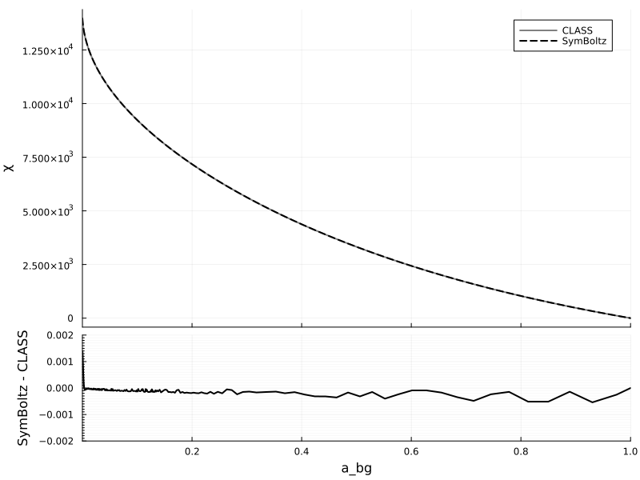
Hubble function
plot_compare("a_bg", "E"; lgx=true, lgy=true, rtol = 1e-5)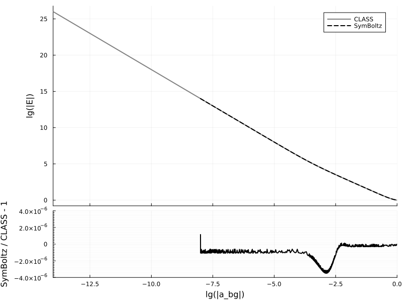
Energy densities
plot_compare("a_bg", ["ργ", "ρb", "ρc", "ρX", "ρν", "ρh"]; lgx=true, lgy=true, rtol = 1e-3)
Equations of state
plot_compare("a_bg", ["wh", "wX"]; lgx=true, atol = 1e-3)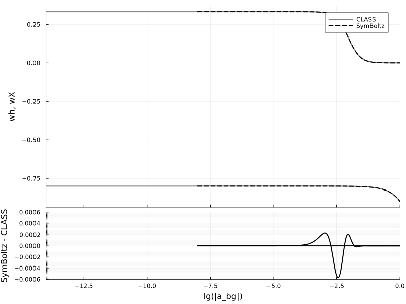
Luminosity distance
plot_compare("a_bg", "dL"; lgx=true, lgy=true)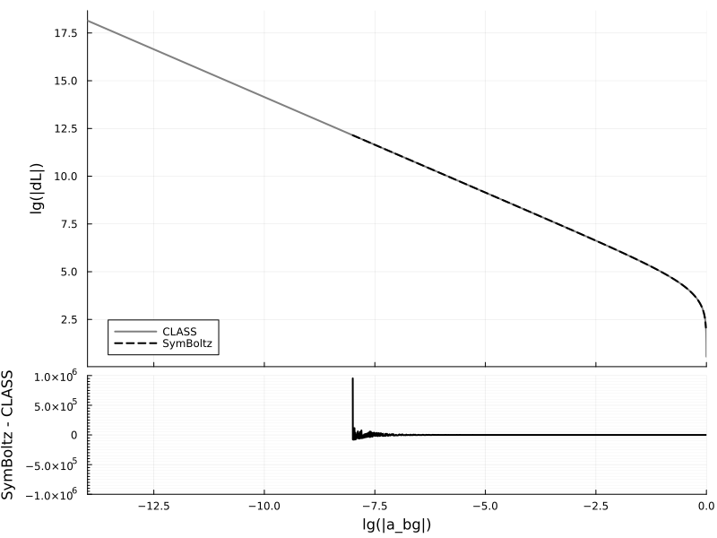
Thermodynamics
Optical depth derivative
plot_compare("a_th", "κ̇"; lgx=true, lgy=true, rtol = 1e-1)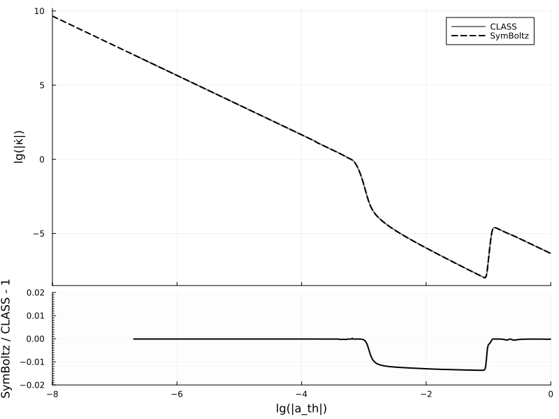
Optical depth exponential
plot_compare("a_th", "exp(-κ)"; lgx=true, atol = 1e-3)Visibility function
plot_compare("a_th", "v"; lgx=true, lgy=false, atol = 1e-4)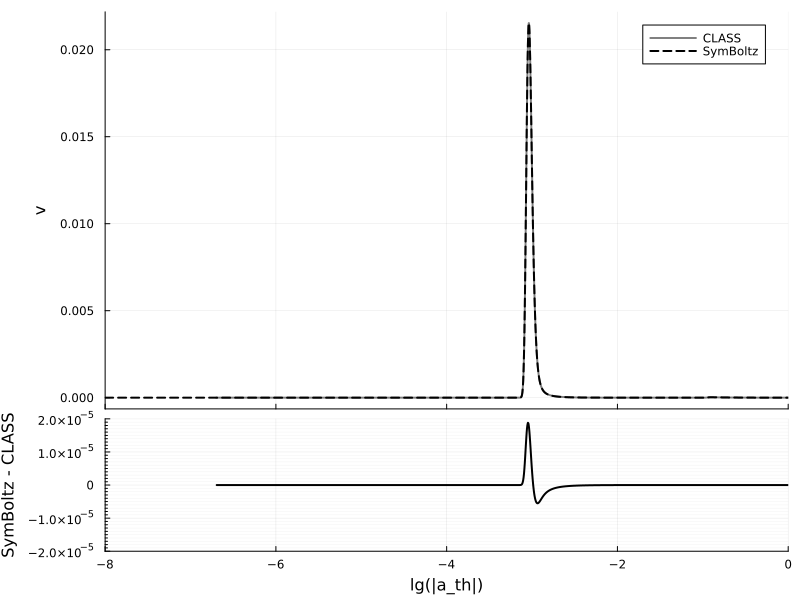
Free electron fraction
plot_compare("a_th", "Xe"; lgx=true, lgy=false, atol = 1e-3)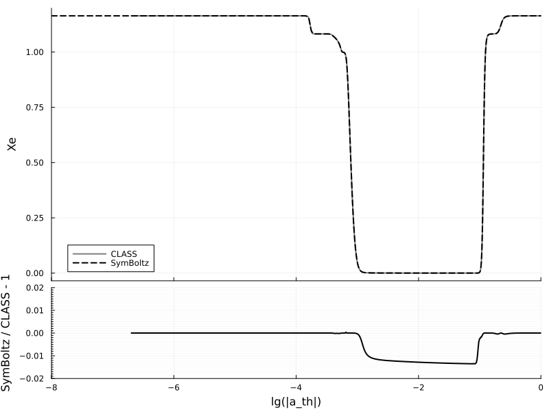
Baryon temperature
plot_compare("a_th", ["Tb", "dTb"]; lgx=true, lgy=true, atol = 1e1)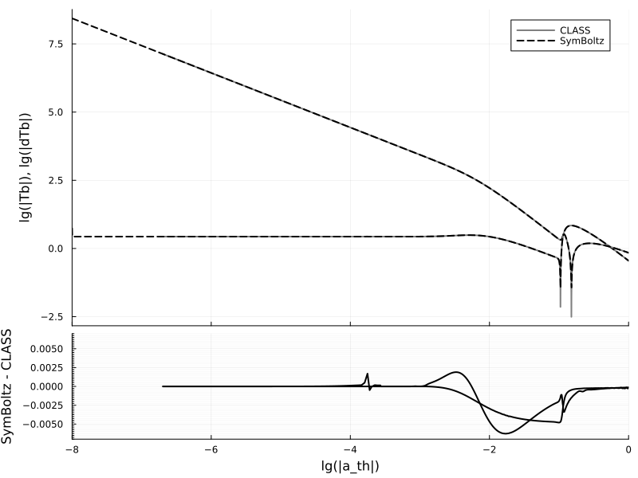
Baryon equation of state
plot_compare("a_th", "wb"; lgx=true, lgy=true, rtol = 1e-2)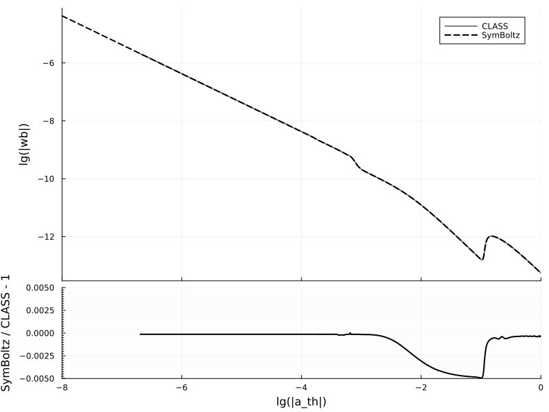
Baryon sound speed
plot_compare("a_th", "csb²"; lgx=true, lgy=true, atol = 1e-8)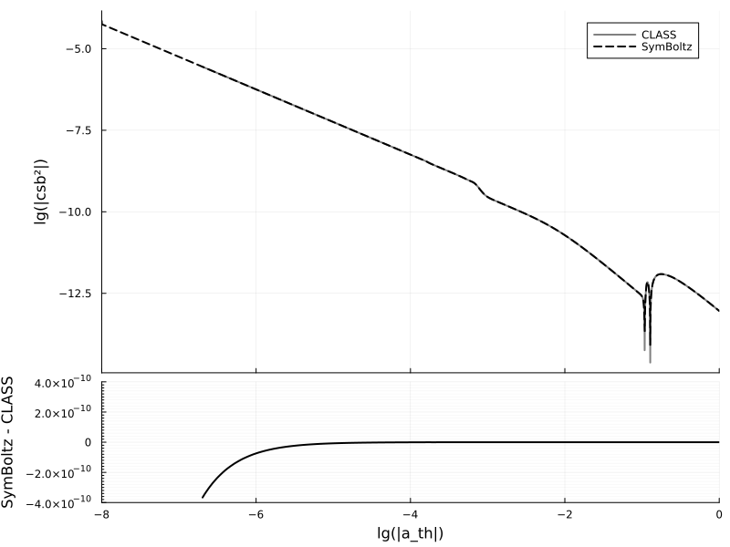
Perturbations
Metric potentials
plot_compare("a_pt", ["Ψ", "Φ"]; lgx=true, atol = 1e-1)
Energy overdensities
plot_compare("a_pt", ["δb", "δc", "δγ", "δν", "δh"]; lgx=true, lgy=true)
Momenta
plot_compare("a_pt", ["θb", "θc", "θγ", "θν", "θh"]; lgx=true, lgy=true)
Dark energy overdensity
plot_compare("a_pt", "δρX"; lgx=true, lgy=true, atol = 1e-4)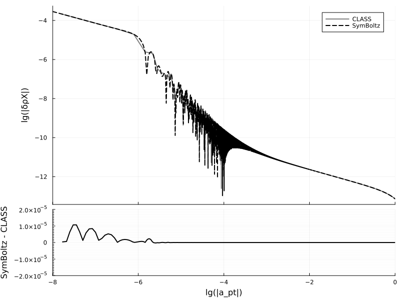
Dark energy momentum
plot_compare("a_pt", "pX"; lgx=true, lgy=true, atol = 1e-4)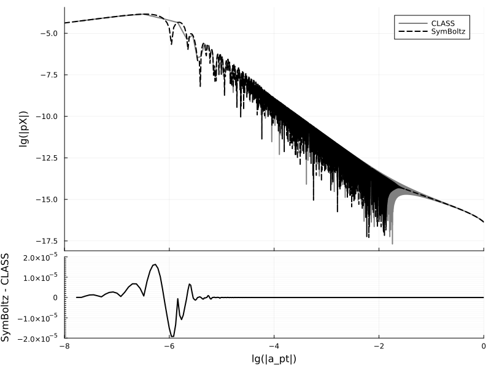
Shear stresses
plot_compare("a_pt", ["σγ", "σν"]; lgx=true, atol = 1e-0)
Polarization
plot_compare("a_pt", ["P0", "P1", "P2"]; lgx=true, atol = 1e-1)
Power spectra
Matter power spectrum
plot_compare("k", "P"; lgx=true, lgy=true)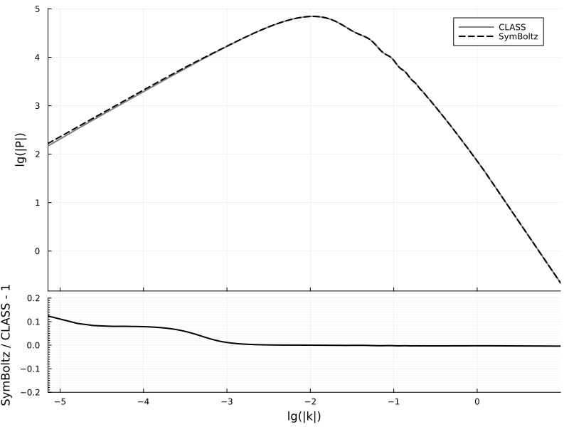
CMB angular power spectrum
plot_compare("l", "DlTT")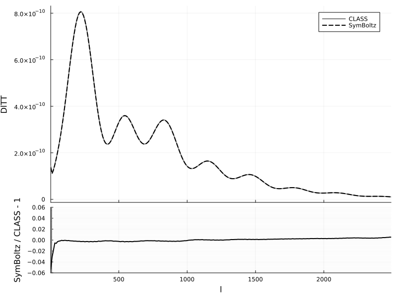
plot_compare("l", "DlTE")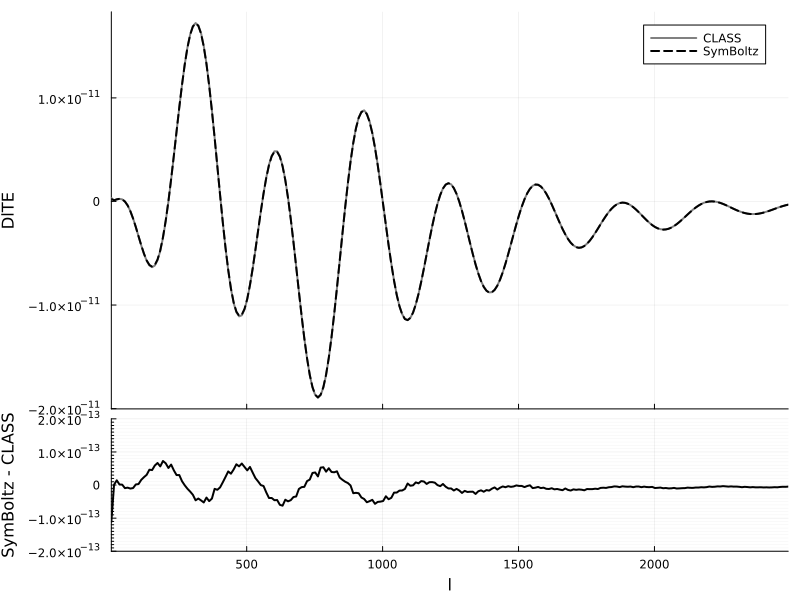
plot_compare("l", "DlEE")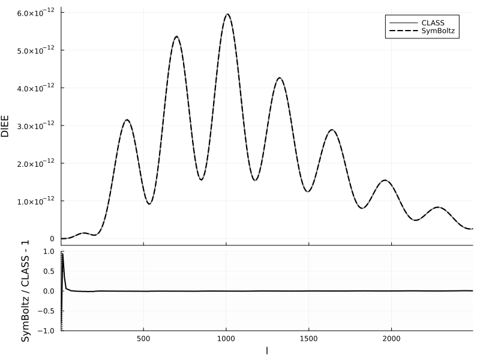